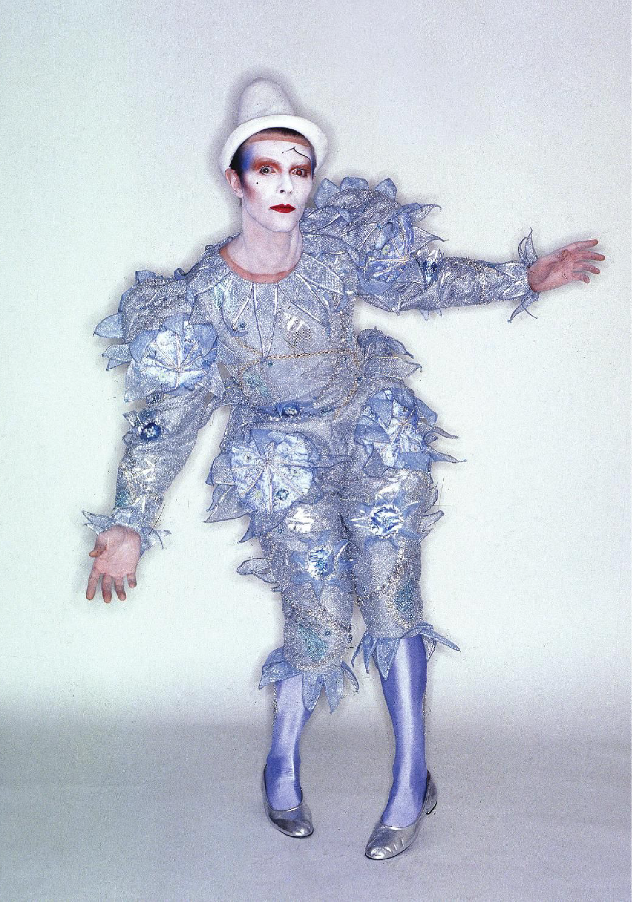
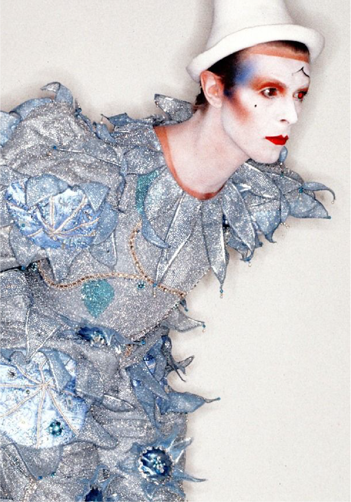
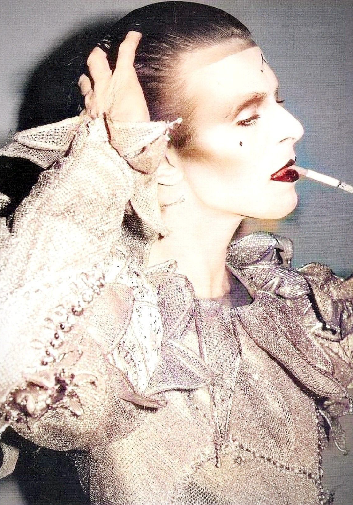
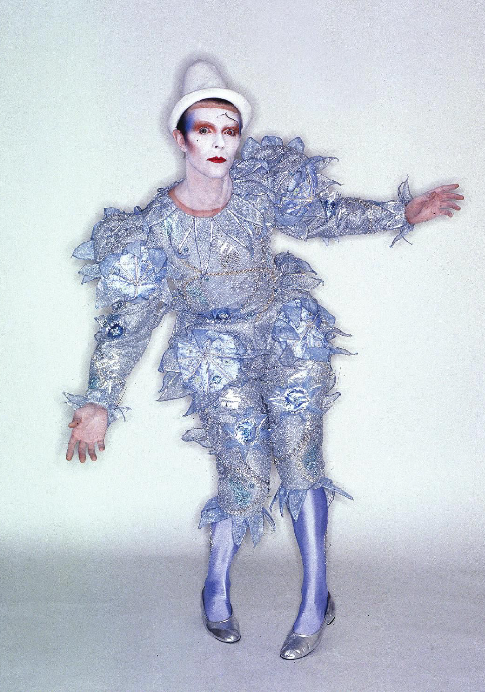
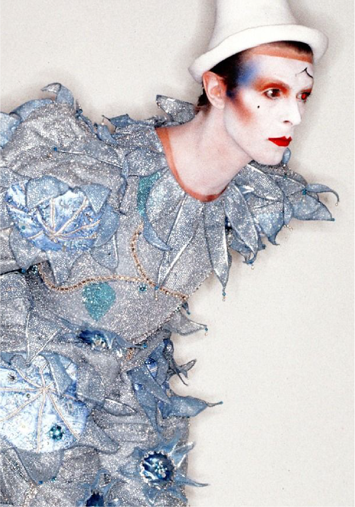
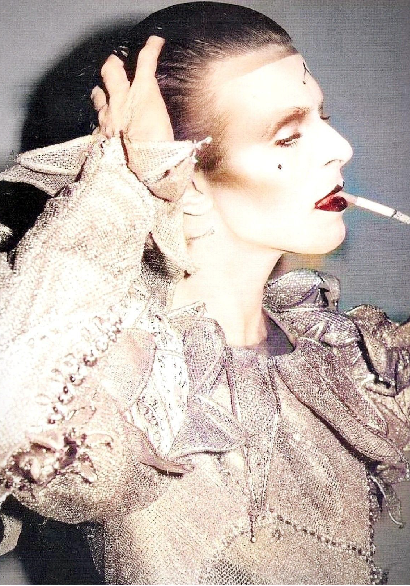

On January 8, 1947, one of the most inspirational singers the world has ever known was born. Born in Brixton, London, David Robert Jones, also known as David Bowie, grew up being inspired by the sights and sounds of the London streets.
In 1969, Bowie released his first studio album, Space Oddity, which was a homage to the kaleidoscopic influences of the London art scene. In 1972, Bowie released The Rise and Fall of Ziggy Stardust and the his persona of Ziggy Stardust had emerged and risen to fame. The eccentric, alien-looking persona that was inspired by Japanese theater and interstellar sci-fi, is what created the wave of what we now know as glam rock.
A year later, in 1973, Bowie killed the glam rock god, Ziggy Stardust, and turned him into the infamous Aladdin Sane which was inspired by Bowie’s travels to America. During 1975 and 1976, the Thin White Duke emerged during Bowie's Station to Station tour. The Duke sported well-groomed blonde hair and wore a simple, cabaret-style wardrobe consisting of a white shirt, black trousers, and a waistcoat.In 1980, David Bowie's clown-like persona Pierrot, was created during the recording of his album Scary Monsters (and Super Creeps). This sorrowful jokster was inspired by Bowie's time pursuing theater, where he studied miming under the dance Lindsay Kemp.
Ziggy Stardust was the result of several events and issues that occurred in Bowie’s life, this persona was created as a way for Bowie to cope with time and aging. Bowie’s decision to make Ziggy bisexual was a result of the controversy regarding sexual orientation that occurred at the time. His interest in science fiction and space travel is what prompted the persona to take on alien-like characteristics.
The persona, Aladdin Sane was assumed to be inspired by David Bowie's half-brother, Terry, who was diagnosed with schizophrenia. The name comes from the word play in the character’s name - 'A lad insane'. The album, which takes on the same name, was based on the dark side of American culture that Bowie had experienced.
The Thin White Duke was created when Bowie was struggling with drug addiction and stress and is connected to the “Station to Station” album. This alter ego portrays a troubled man, who sings of romance but is completely numb to feelings. It is his most controversial persona as it has been called a psychopathic aristocrat and an immortal zombie.
The persona of Pierrot appears on David Bowie’s 1980 album “Scary Monsters (Super Creeps)”. His music video “Ashes to Ashes” features Bowie in the gaudy Pierrot costume that became the dominant visual representation of his Scary Monsters phase. Pierrot is also believed to be a reincarnation of Bowie’s first fictional character, Major Tom, who is described as a junkie and alcoholic in the song.
 




